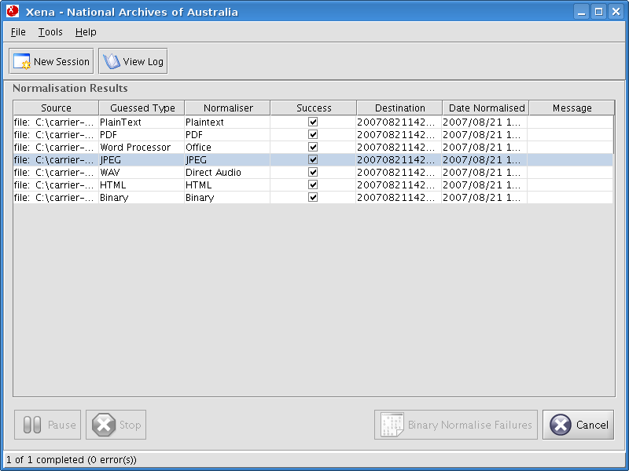
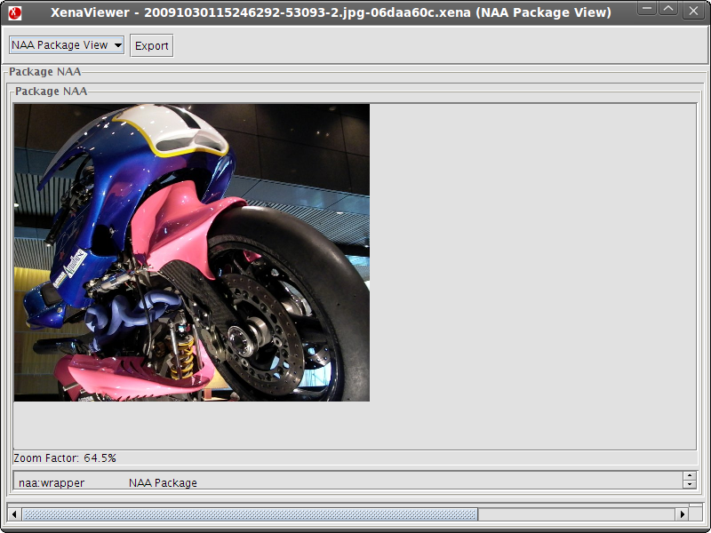
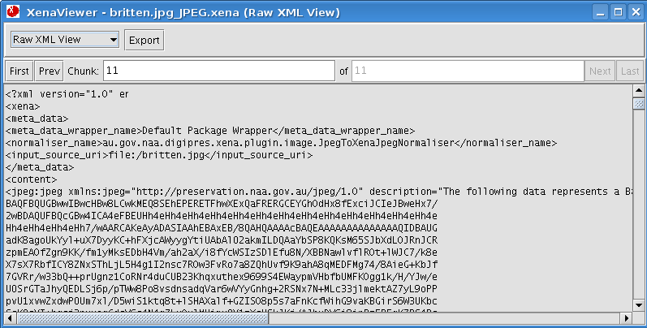
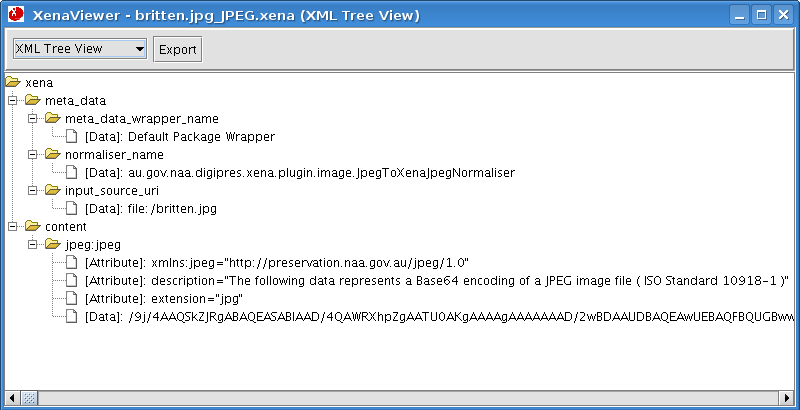
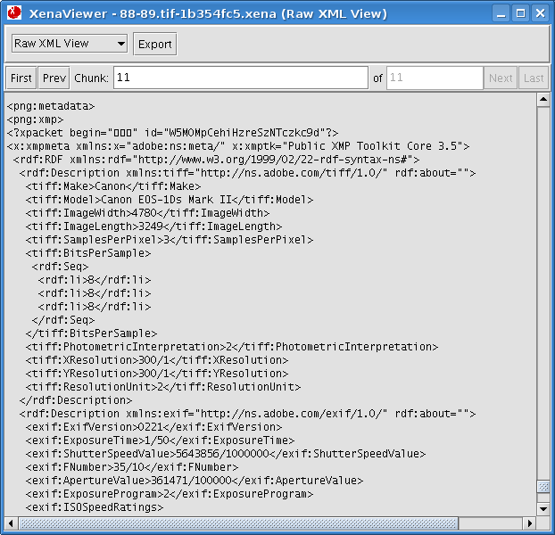

Once files have been normalised, the results may be checked via the Xena viewer. The following example shows a JPEG image file selected, ready to be viewed.

Double clicking on a file will open it up in the Xena viewer. The drop down menu at the top of the viewer window may be used to select other available views for that file type.
The default view (NAA Package) produces a presentation of the file (in this case an image) along with some metadata associated with the file. It should appear as it would have looked originally (although it has now been normalised).

To see the file in its XML format, select Raw XML View.

...and XML Tree View.

Other file types may offer further viewing options. For example, the viewer may deliver Office files with an option to open the file in OpenOffice.org, while TIFF files which contain metadata will include this information inside the XML after converting the file to PNG. Below is an example of the latter.
